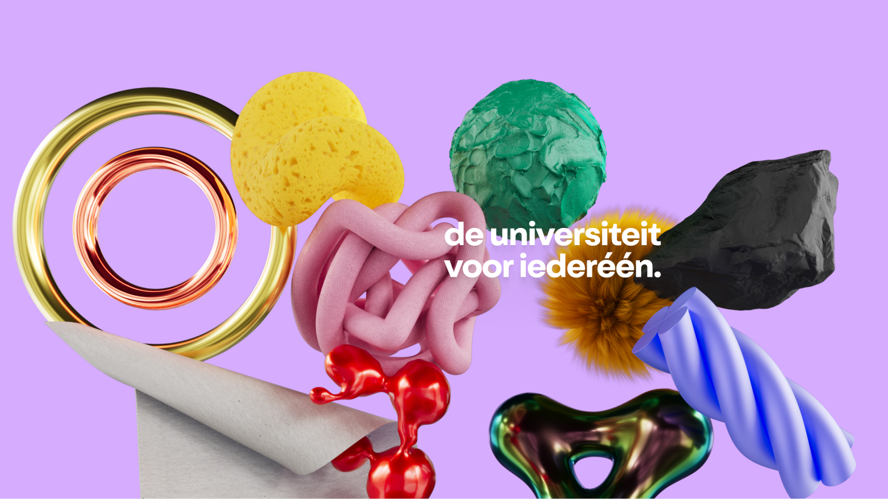
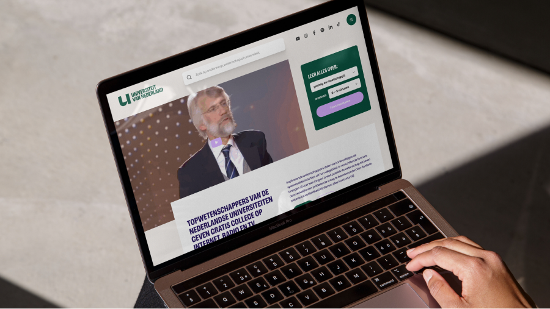
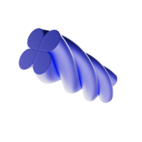
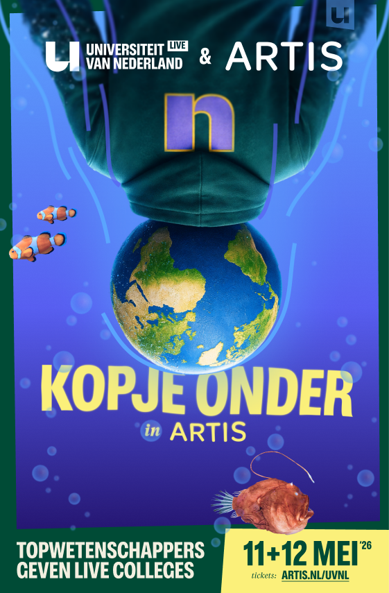
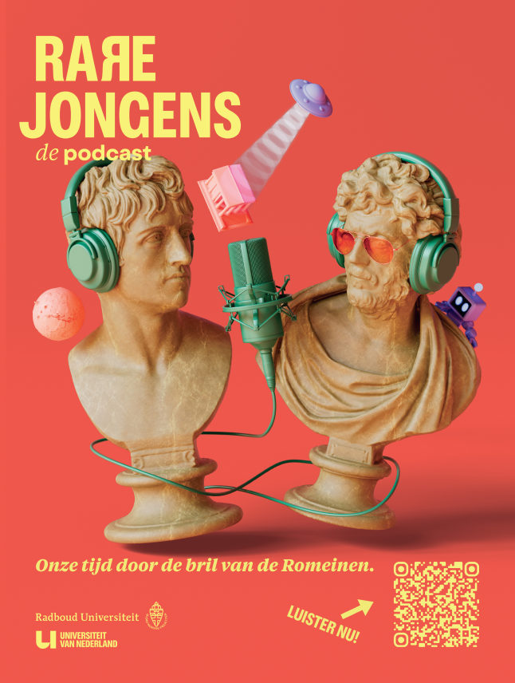
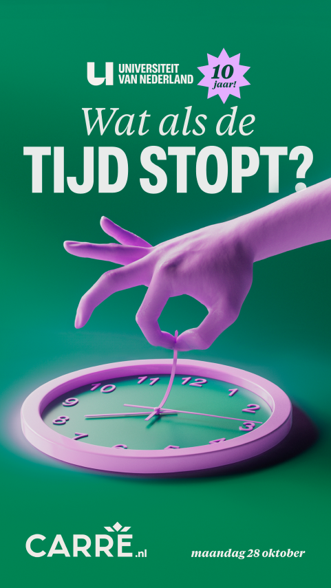
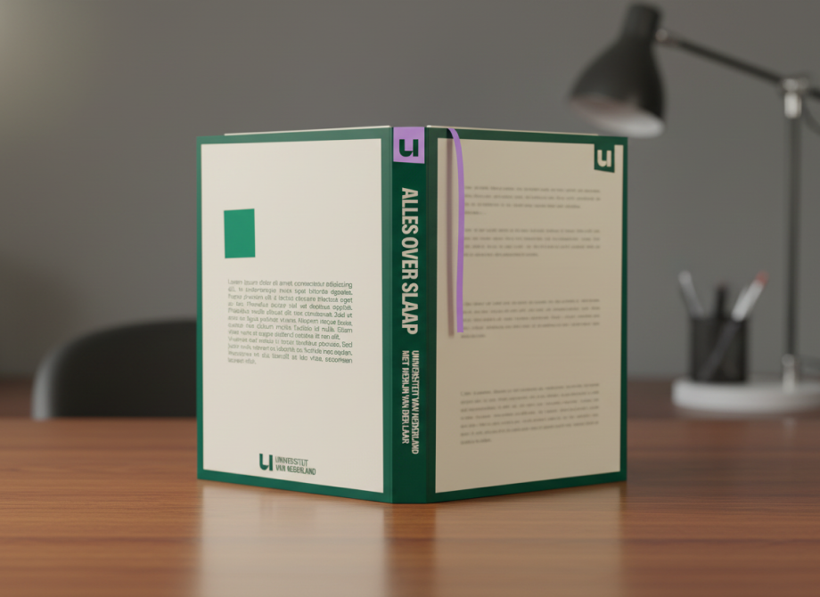
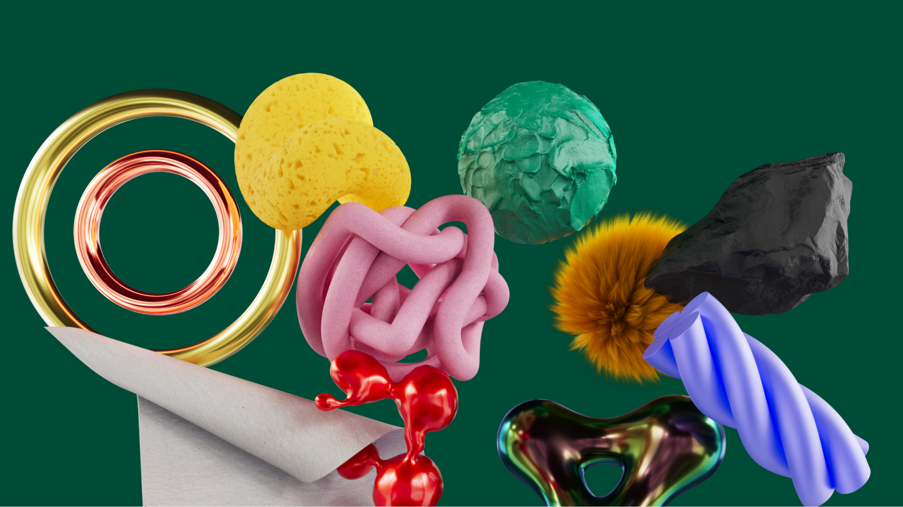

Dit kun je zelf doen
Gebruik het goedgekeurde logo voor partnervermeldingen, eventpagina’s en eenvoudige co-branding. Houd voldoende ruimte rond het logo en gebruik alleen de aangeleverde varianten.
Download het logopakket ↓Partnergids · Universiteit van Nederland
Deze gids helpt partners om Universiteit van Nederland herkenbaar, zorgvuldig en overtuigend in te zetten. Je vindt hier de kern van het merk, inspirerende toepassingen en een heldere route naar productie.
Universiteit van Nederland brengt wetenschap uit collegezalen en laboratoria naar het dagelijks leven. Deskundig genoeg om te vertrouwen, toegankelijk genoeg om meteen te willen luisteren.
We leggen ingewikkelde ideeën helder uit, zonder ze kleiner te maken. Het merk voelt nieuwsgierig, energiek en een tikje eigenwijs. Nooit schools, afstandelijk of glad.


Het logo toepassen kan vaak direct. Nieuwe communicatie maken we samen, zodat inhoud, vorm en rechten vanaf het begin kloppen.
Gebruik het goedgekeurde logo voor partnervermeldingen, eventpagina’s en eenvoudige co-branding. Houd voldoende ruimte rond het logo en gebruik alleen de aangeleverde varianten.
Download het logopakket ↓Campagnes, social posts, video-assets, presentaties en events vragen om het complete systeem. Ons merkteam vertaalt je briefing naar een uiting die echt als UvNL voelt.
Stuur je briefing ↗Twijfel je over een logo-combinatie, tekst, beeldkeuze of toepassing? Deel het concept vóór publicatie. Een korte merkcheck voorkomt correctierondes aan het einde.
Vraag een merkcheck ↗Een stevige groene basis, uitgesproken accenten en een redactionele beeldtaal maken het merk eigen. Zie dit als richting voor de briefing; het merkteam bewaakt de precieze uitvoering.
Kleur
Typografie
Vragen die
blijven hangen.
Heldere uitleg met ritme, ruimte en een menselijke toon.
“Nieuwsgierigheid is het begin van alles.”
Beeldtaal


Echte mensen, sterke crops en één onverwacht element. Nooit generieke stock.
De UvNL-case laat zien hoe één systeem kan bewegen tussen inhoud, cultuur en actualiteit zonder zijn herkenbaarheid te verliezen.
Een rustig digitaal fundament geeft video, verdieping en ontdekking alle ruimte.





Samen met kennispartners
Betrek ons vroeg. Dan kunnen we inhoud, vorm, planning en rechten in één beweging goed organiseren.
Vertel wat je wilt bereiken, voor wie en wanneer. Een ruwe briefing is genoeg om te beginnen.
We bepalen samen wat je zelf kunt toepassen en wat het merkteam ontwerpt of redigeert.
Na een korte merkcheck ontvang je de definitieve bestanden voor publicatie.
Een idee of briefing?